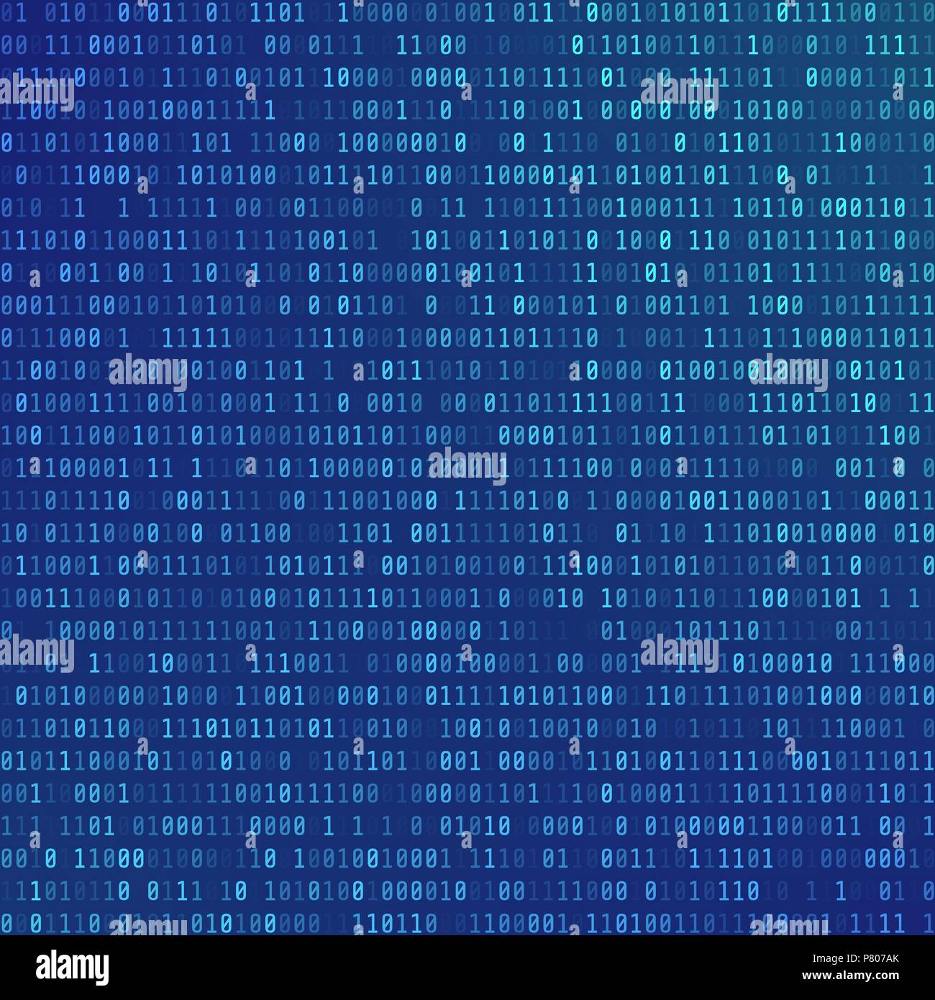

CAPITOLO 3 :
CODIFICHE :
1. Testi :
ASCII e Unicode sono essenziali per la rappresentazione.
dei caratteri nei sistemi informatici.
ASCII (American Standard Code for Information Interchange)
- Sviluppato negli anni '60, ASCII è stato creato come standard
per la rappresentazione dei caratteri nel testo per computer e
telecomunicazioni.
- Comprende un set di 128 simboli, che include lettere maiuscole
e minuscole, numeri, segni di punteggiatura e caratteri di controllo.
- Ogni carattere ASCII è rappresentato da un numero decimale che va da 0 a 127.
- Ad esempio, il carattere 'A' corrisponde al numero 65, mentre 'a' è
rappresentato dal numero 97.
- Semplicità: È facilmente interpretabile e ampiamente utilizzato per
comunicazioni di base.
- Limitazioni: Non supporta caratteri non latini, simboli speciali o
lingue con set di caratteri più ampi.
Unicode
- Unicode è stato creato per superare le limitazioni di ASCII, permettendo
la rappresentazione di caratteri da tutte le lingue e simboli usati nel mondo.
- Si tratta di un sistema di codifica molto più ampio, che include oltre
143.000 caratteri.
- Universalità: Supporta praticamente tutte le lingue e simboli globali,
comprese emoji e simboli matematici.
Confronto tra ASCII e Unicode
Compatibilità:
- ASCII è limitato a un set di caratteri di base, mentre Unicode può rappresentare
una vasta gamma di caratteri globali.
- Unicode in UTF-8 mantiene la compatibilità con ASCII, facilitando la transizione.
Utilizzo:
- ASCII è ancora utilizzato in contesti semplici dove è necessario un supporto minimo
dei caratteri.
- Unicode è preferito nelle applicazioni moderne che richiedono supporto multilingue
e simboli complessi.
Conclusione
Le codifiche dei testi, con ASCII che rappresenta la semplicità e la standardizzazione
iniziale, e Unicode che offre universalità e flessibilità, sono fondamentali per
la comunicazione digitale di oggi. Mentre ASCII ha un ruolo storico e specifico,
Unicode è diventato il gold standard per la rappresentazione dei testi nel mondo
interconnesso e multilingue attuale.
ASCII, o American Standard Code for Information Interchange,
è un sistema di codifica dei caratteri utilizzato in informatica
e telecomunicazioni. Questo codice è stato creato per permettere
la rappresentazione di testi e simboli attraverso computer e altri
dispositivi digitali.
Come Funziona l'ASCII
ASCII impiega una serie di numeri da 0 a 127 per rappresentare lettere,
numeri e simboli. Ogni carattere è associato a un numero decimale,
facilmente convertibile in codici binari, che i computer utilizzano per
memorizzare e gestire i dati.
Esempi di Caratteri ASCII:
| Lettere Maiuscole |
Valore ASCII |
| A |
65 |
| B |
| B |
66 |
| ... Z |
90 |
Lettere Minuscole |
Valore ASCII |
| a |
97 |
| b |
98 |
| ... z |
122 |
| Numeri |
Valore ASCII |
| 0 |
48 |
| 1 |
49 |
| ... 9 |
57 |
Simboli |
Valore ASCII |
| @ |
64 |
| & |
38 |
| ... $ |
36 |
Importanza Storica
Prima dell'adozione diffusa di ASCII, non c'era uno standard comune per
la codifica dei testi nei computer, il che complicava la comunicazione e
lo scambio di dati tra sistemi diversi. ASCII ha standardizzato questo processo,
rendendo più semplice lo sviluppo dell'informatica moderna.
Utilizzo nella Tastiera
Sulla tastiera, ogni tasto corrisponde a uno o più codici ASCII. Ad esempio,
premendo il tasto "A", si invia il codice 65 al computer, che lo interpreta
e visualizza la lettera "A" sullo schermo. Questo consente la digitazione e
la comunicazione digitale come la conosciamo oggi.
ASCII ha costituito la base per molte altre codifiche di caratteri che sono seguite,
come Unicode, che amplia la rappresentazione dei caratteri a una vasta gamma
di simboli utilizzati in tutto il mondo.
3. IMMAGINI :
Bit e Pixel
Bit:
- Un bit è l'unità fondamentale di informazione nei computer, capace di assumere solo due valori: 0 o 1.
- Combinando più bit, si possono rappresentare informazioni più complesse. Ad esempio:
- 1 bit può rappresentare 2 valori (0 o 1).
- 2 bit possono rappresentare 4 valori (00, 01, 10, 11).
- 8 bit formano un byte, che può rappresentare 256 valori diversi.
Pixel:
- Un pixel è l'unità più piccola di un'immagine digitale.
- Ogni pixel è definito da una combinazione di bit che ne determina il colore.
Profondità del Colore
La profondità del colore indica il numero di bit utilizzati per rappresentare il colore
di un singolo pixel. Maggiore è la profondità del colore, più colori possono essere visualizzati.
- 1-bit (Monocromatico): Può rappresentare solo 2 colori, di solito bianco e nero.
- 8-bit: Può rappresentare 256 colori.
- 16-bit: Può rappresentare 65.536 colori.
- 24-bit (True Color): Può rappresentare circa 16,7 milioni di colori,
utilizzando 8 bit per ciascun canale di colore (rosso, verde, blu).
- 32-bit: Simile al 24-bit, ma con un canale aggiuntivo per la trasparenza (canale alpha).
Codifica delle Immagini
Quando un'immagine viene codificata, ogni pixel è rappresentato da una combinazione di bit che definisce il suo colore.
Esempio di Codifica RGB:
- In un'immagine a 24 bit, ogni pixel è rappresentato da tre canali di 8 bit, uno per ogni colore primario (rosso, verde, blu).
- Ad esempio, un pixel rosso puro può essere rappresentato come:
- Rosso: 255 (11111111 in binario)
- Verde: 0 (00000000 in binario)
- Blu: 0 (00000000 in binario)
Esempio di Codifica PNG:
- In un'immagine PNG a 32 bit, i primi 24 bit definiscono il colore RGB del pixel,
mentre gli ultimi 8 bit rappresentano il canale alpha per la trasparenza.
| IMMAGINE |
RISOLUZIONE |
PROFONDITÀ |
OCCUPAZIONE MEMORIA |
| B/N |
1024×740 |
1 |
1024×740×1 bit |
| GRIGIO |
1024×740 |
8 |
1024×740×8 bit |
| RADIO |
1024×740 |
16 |
1024×740×16 bit |
| COLORE (RGB) |
1024×740 |
24 |
1024×740×24 bit |
| COLORE AQ |
1024×740 |
48 |
1024×740×48 bit |
codifiche vettoriale
La codifica vettoriale dell'immagine è un metodo utiizzato per rappresentare le immagine attaverso elemnti geometrici
come punti, linee, curve, poligoni.
Le caratterestiche principali della codfica vettoriale sono:
1-Scalabilità: Le immagini vettoriali possono essere scalate a qualsiasi dimensione senza perdita di qualità.
Questo perché sono basate su formule matematiche e non su pixel.
2-File di dimensioni ridotte: I file vettoriali tendono ad essere meno pesanti rispetto ai file raster,
soprattutto per immagini con aree estese di colore uniforme.
3-Modificabilità: Gli elementi delle immagini vettoriali possono essere facilmente modificati senza influenzare
l'intera immagine. Ogni elemento è indipendente.
Formati Comuni
- SVG (Scalable Vector Graphics)*: Un formato di file molto popolare e basato su XML.
- EPS (Encapsulated PostScript)*: Utilizzato soprattutto per la stampa.
- PDF (Portable Document Format)*: Può contenere sia grafica vettoriale che raster.
4. AUDIO :

La codifica audio è il processo che trasforma i segnali audio analogici in un formato digitale,
permettendo così la loro memorizzazione, trasmissione e riproduzione su dispositivi digitali.
Questo processo è fondamentale per la diffusione di audio su internet, la produzione musicale
e in molti altri contesti.
Principi Fondamentali
1. Campionamento: Il primo passo nella codifica audio è il campionamento, che consiste nella
misurazione del segnale audio analogico a intervalli regolari. La frequenza di campionamento,
espressa in Hertz (Hz), indica quante volte al secondo il segnale viene campionato. Ad esempio,
una frequenza di campionamento di 44.1 kHz significa che il segnale è campionato 44.100 volte al secondo.
2. Quantizzazione: Dopo il campionamento, il segnale analogico viene convertito in un formato
numerico attraverso la quantizzazione. Questo processo prevede l'assegnazione di valori discreti
a ciascun campione. Una maggiore precisione nella quantizzazione porta a una qualità del suono
migliore, ma richiede anche una maggiore quantità di dati.
3. Codifica: Una volta quantizzati, i campioni vengono codificati in formato binario utilizzando
codec audio. Codec come MP3, AAC e FLAC determinano il modo in cui i dati vengono compressi e memorizzati.
La compressione può essere lossy (con perdita di dati, come nel caso di MP3) o lossless (senza perdita di dati,
come per FLAC).
Applicazioni Pratiche
La codifica audio è utilizzata in diversi settori:
Streaming: Servizi come Spotify e YouTube impiegano codifiche audio per trasmettere musica e video in streaming.
Telefonia: La tecnologia VoIP (Voice over Internet Protocol) utilizza codec audio per trasmettere le voci su reti digitali.
Archiviazione: La musica digitale viene codificata in formati come MP3 o FLAC per essere memorizzata e
riprodotta su dispositivi come smartphone e lettori multimediali.
La codifica audio è un aspetto essenziale della tecnologia moderna
5. VIDEO :

Il video è la sequenza di immagine proittata di una velocità Fps(fream per secondi) che viene visualizzata sullo schermo.
La celocit normale dell'occhio è di 30Fps , ma anche può essere proiettato a 60Fps, 120Fps ma sarà molo veloce da vedere.
La risoluzione del video è la stessa della risoluzione dell'immagine, ma aggingiamo la velocità per secodi.
occ1= Risoluzione×profondità×velocità×secondi == Bit
occ2=occ1/8 == Byte
occ3=occ2/2^10 == KB
ecc.
Nel mondo digitale di oggi, la codifica video gioca un ruolo fondamentale nelle comunicazioni e nella distribuzione dei contenuti.
Questo processo complesso, che comprende la compressione e decompressione dei file video,
permette di trasmettere e archiviare video
in modo efficiente senza compromettere la qualità.
I file video grezzi sono notoriamente pesanti, e la loro trasmissione senza compressione
richiederebbe una larghezza di banda insostenibile.
La codifica riduce le dimensioni dei file video, rendendo possibile lo streaming e il download rapidi,
migliorando così l'esperienza dell'utente.
Uno degli standard di codifica video più comuni è H.264, conosciuto anche come AVC (Advanced Video Coding).
Questo standard è apprezzato per la sua efficienza nella compressione e la qualità che offre.
Con l'evoluzione della tecnologia e l'aumento della domanda
di contenuti video ad alta risoluzione, sono emersi nuovi standard come H.265 o HEVC (High Efficiency Video Coding),
che forniscono una compressione ancora più efficace,
riducendo ulteriormente le dimensioni dei file senza compromettere la qualità visiva.
La codifica video non riguarda solo l'efficienza della trasmissione,
ma anche la sicurezza. Attraverso tecniche di cifratura, i dati video possono essere protetti da accessi non autorizzati, garantendo la privacy e
la sicurezza delle informazioni trasmesse.
Questo è particolarmente importante in applicazioni come le videoconferenze, la sorveglianza e la trasmissione di
contenuti sensibili.
Una compressione video efficiente non solo migliora l'usabilità, ma ha anche un impatto positivo sull'ambiente. Riducendo il consumo di
energia e le risorse necessarie per la trasmissione e l'archiviazione dei dati, la codifica video contribuisce a un uso più sostenibile delle risorse tecnologiche.
La codifica del video è un aspetto fondamentale che sostiene il nostro mondo digitale attuale.
Grazie ai costanti progressi in questo settore, possiamo fruire di contenuti video di alta qualità in modo veloce, sicuro e sostenibile.
Investire nella ricerca e nello sviluppo di nuove tecniche di codifica sarà cruciale per affrontare le sfide future e assicurare un'esperienza
utente sempre più soddisfacente.
2. NUMERI (INTERI E REALI) :

La codifica dei numeri è un concetto chiave sia nella matematica che nell'informatica.
Riguarda il modo in cui rappresentiamo i numeri in vari formati, facilitando così la loro manipolazione,
memorizzazione e trasmissione nei sistemi digitali.
Principali Tipi di Codifica
1. Sistema decimale: Questo è il sistema numerico più comune, utilizzato nella vita di tutti i giorni,
e si basa su dieci simboli (0-9). Ogni posizione in un numero decimale rappresenta una potenza di 10.
2.Sistema binario: Utilizzato principalmente in informatica, il sistema binario si basa su due simboli (0 e 1).
Ogni posizione in un numero binario rappresenta una potenza di 2.
3. Sistema esadecimale: Questo sistema utilizza sedici simboli (0-9 e A-F) e ogni posizione rappresenta una potenza di 16.
È frequentemente impiegato in programmazione per rappresentare indirizzi di memoria e colori.
4. Sistema ottale: Basato su otto simboli (0-7), ogni posizione in un numero ottale rappresenta una potenza di 8.
È stato storicamente utilizzato nei primi computer e in alcuni ambiti specifici.
Processo di Codifica
Convertire da decimale a binario: Per convertire un numero decimale in binario, si divide il numero per 2 e si registra il resto.
Questo processo si ripete con il quoziente fino a ottenere 0. I resti registrati formano il numero binario.
Convertire da decimale a esadecimale: Allo stesso modo, per convertire un numero decimale in esadecimale,
si divide il numero per 16 e si registra il resto, ripetendo il processo con il quoziente fino a raggiungere 0.
I resti formano il numero esadecimale, con i resti da 10 a 15 rappresentati dalle lettere A-F.
Conversione inversa: Per convertire un numero binario o esadecimale in decimale, si moltiplici.
Applicazioni Pratiche
La codifica dei numeri è fondamentale in diversi settori:
- Informatica: I computer operano utilizzando il sistema binario per effettuare calcoli e archiviare informazioni.
- Programmazione: I sistemi esadecimale e binario vengono impiegati per rappresentare dati complessi, come indirizzi
di memoria e colori nei codici CSS.
- Elettronica: I sistemi numerici codificati sono utilizzati per progettare circuiti digitali e schede elettroniche.
Conclusione
La codifica dei numeri rappresenta un elemento cruciale nell'informatica e nella matematica, consentendo di rappresentare,
memorizzare e manipolare numeri in vari formati. Comprendere i diversi sistemi di codifica e le loro conversioni è
fondamentale per chiunque operi con sistemi digitali e dati numerici.